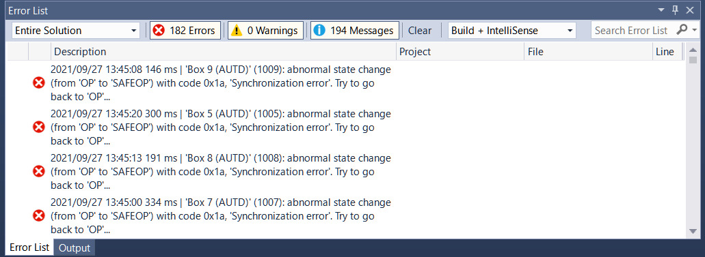

TwinCAT
TwinCATはPCでEherCATを使用する際の唯一の公式の方法である. TwinCATはWindowsのみをサポートする非常に特殊なソフトウェアであり, Windowsを半ば強引にリアルタイム化する.
また, 特定のネットワークコントローラが求められるため, 対応するネットワークコントローラの一覧を確認すること.
Note: 或いは, TwinCATのインストール後に,
C:/TwinCAT/3.1/Driver/System/TcI8254x.infに対応するデバイスのVendor IDとDevice IDが書かれているので,「デバイスマネージャー」→「イーサネットアダプタ」→「プロパティ」→「詳細」→「ハードウェアID」と照らし合わせることでも確認できる.
上記以外のネットワークコントローラでも動作する場合があるが, その場合, 正常な動作とリアルタイム性は保証されない.
事前準備
TwinCATのインストール
前提として, TwinCATはHyper-VやVirtual Machine Platformと共存できない. そのため, これらの機能を無効にする必要がある. これには, 例えば, PowerShellを管理者権限で起動し,
Disable-WindowsOptionalFeature -Online -FeatureName Microsoft-Hyper-V-Hypervisor
Disable-WindowsOptionalFeature -Online -FeatureName VirtualMachinePlatform
と打ち込めば良い.
また, Windows 11の場合, 仮想化ベースのセキュリティ機能もオフにする必要がある. 「Windows セキュリティ」→ 「デバイス セキュリティ」→「コア分離」→「メモリ整合性」をオフにする.
まず, TwinCAT XAEを公式サイトからダウンロードする. ダウンロードには登録 (無料) が必要になる.
ダウンロードしたインストーラを起動し, 指示に従う. この時, TwinCAT XAE Shell installにチェックを入れ, Visual Studio Integrationのチェックを外すこと.
インストール後に再起動し, C:/TwinCAT/3.1/System/win8settick.batを管理者権限で実行し, 再び再起動する.
AUTD3 Serverのインストール
TwinCATのLinkを使うには, まず, AUTD3 Serverをインストールする必要がある.
GitHub Releasesにてインストーラを配布しているので, これをダウンロードし, 指示に従ってインストールする.
NOTE: 必ず, 使用するソフトウェアのバージョンに合わせた
AUTD Serverを使用すること.
NOTE: CLI版もある.
AUTD3 Serverを実行すると, 以下のような画面になるので, TwinCATタブを開く.

初回の追加作業
初回のみ, 以下の作業が必要になる.
まず, 「Copy AUTD.xml」ボタンを押す. ここで, 「AUTD.xml is successfully copied」のようなメッセージが出れば成功である.
次に, 「Open XAE Shell」ボタンを押し, XAE Shellを開く. TwinCAT XAE Shell上部メニューから「TwinCAT」→「Show Realtime Ethernet Compatible Devices」を開き「Compatible devices」の中の対応デバイスを選択し, Installをクリックする. 「Installed and ready to use devices (realtime capable)」にインストールされたアダプタが表示されていれば成功である.
なお,「Compatible devices」に何も表示されていない場合はそのPCのイーサネットデバイスはTwinCATに対応していない. 「Incompatible devices」の中のドライバもインストール自体は可能で, インストールすると「Installed and ready to use devices (for demo use only)」と表示される. この場合, 使用できるが動作保証はない.
AUTD Serverの実行
AUTD3とPCを接続し, AUTD3の電源が入った状態で, 「Run」ボタンを押す. このとき, 「Client IP address」の欄は空白にしておくこと.
下の画面のように, AUTD3デバイスが見つかった旨のメッセージが出れば成功である.

なお, TwinCATはPCの電源を切る, スリープモードに入る等で接続が途切れるので, その都度実行し直すこと.
ライセンス
初回はライセンス関係のエラーが出るので, XAE Shellで「Solution Explorer」→「SYSTEM」→「License」を開き, 「7 Days Trial License …」をクリックし, 画面に表示される文字を入力する. なお, ライセンスは7日間限定のトライアルライセンスだが, 切れたら再び同じ作業を行うことで再発行できる. ライセンスを発行し終わったら, “TwinCAT XAE Shell“を閉じて, 再び実行する.
TwinCATリンク
Install
cargo add autd3-link-twincattarget_link_libraries(<TARGET> PRIVATE autd3::link::twincat)
メインライブラリに含まれている.
メインライブラリに含まれている.
メインライブラリに含まれている.
APIs
use autd3_link_twincat::TwinCAT;
fn main() {
let _ =
TwinCAT::new();
}#include "autd3/link/twincat.hpp"
int main() {
using namespace autd3;
link::TwinCAT();
return 0; }
using AUTD3Sharp.Link;
new TwinCAT();
from pyautd3.link.twincat import TwinCAT
TwinCAT()
トラブルシューティング
大量のデバイスを使用しようとすると, 下の図のようなエラーが発生することがある.

この場合は, AUTD3 ServerのSync0 cycle timeとSend task cycle timeの値を増やし, AUTD Serverを再び実行する.
これらのオプションの値はデフォルトでそれぞれになっている.
どの程度の値にすればいいかは接続する台数による. エラーが出ない中で可能な限り小さな値が望ましい. 例えば, 9台の場合は–程度の値にしておけば動作するはずである.